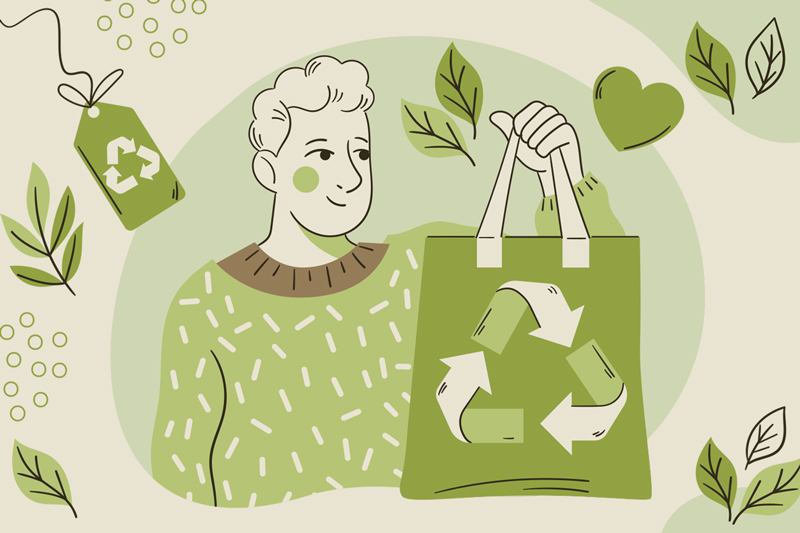
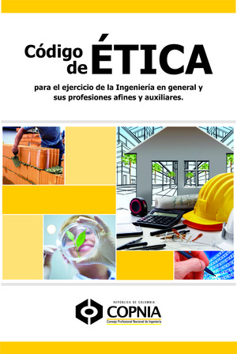

Video de la ética y la moral en nuestro desarrollo como seres humanos.
¿Como puedo alcanzar una vida plena, que estrategias basadas en la ética podría implementar y cumplir con mi responsabilidad social?
1. Autoconocimiento: Comienza por conocerte a ti mismo, identificando tus valores, intereses y fortalezas. Reflexiona sobre lo que te hace feliz y satisfecho, y asegúrate de alinear tus acciones con tus principios éticos.

2. Relaciones saludables: Cultiva relaciones basadas en el respeto, la empatía y la honestidad. Prioriza la comunicación efectiva y el apoyo mutuo en tus relaciones personales y profesionales.
3. Cuidado personal: Dedica tiempo y esfuerzo a tu bienestar físico y emocional. Establece hábitos saludables, como una alimentación equilibrada, ejercicio regular, descanso adecuado y prácticas de manejo del estrés, como la meditación o el mindfulness.
4. Contribución social: Identifica las necesidades de tu comunidad y busca formas de contribuir. Puedes participar en organizaciones sin fines de lucro, ser voluntario en proyectos sociales, o utilizar tus habilidades y conocimientos para ayudar a los demás de manera directa.
5. Consumo responsable: Evalúa el impacto ético de tus elecciones de consumo. Apoya empresas y productos que promuevan prácticas sostenibles y responsables con el medio ambiente y los derechos humanos.
6. Ética laboral: En tu vida profesional, actúa de manera ética y responsable. Cumple tus compromisos, respeta los derechos de los demás y busca oportunidades para contribuir positivamente en tu entorno laboral.
7. Aprendizaje continuo: Mantén una mentalidad abierta y busca oportunidades de crecimiento y aprendizaje. Actualiza tus conocimientos, desarrolla nuevas habilidades y mantente al tanto de los avances éticos en tu campo de interés.
¿Conoces el código ético del ingeniero de sistemas?
El código de ética de un ingeniero en sistemas computacionales, se rige bajo estas 10 normativas. Así que si quieres ejercer esta profesión, quieres postular a una escuela de ingeniería de sistemas, o recién acabas de egresar, toma en cuenta estos 10 puntos que te harán ser un profesionista respetado y valorado.
- Debe tener el valor de la confidencialidad para salvaguardar datos, archivos, notas, documentos y otros asuntos que son de índole privada.
- Debe ser honesto cuando dé su conclusión sobre algún fallo en el sistema, software o hardware de la empresa.
- En primera instancia debe velar por solucionar los problemas de sus clientes y empresa de la forma más justa y óptima.
- Se debe preparar constantemente, adquirir nuevos conocimientos y perfeccionar sus técnicas.
- Por ningún motivo debe ejercer acciones o señales discriminatorias contra otros profesionistas o compañeros.
- Si el ingeniero de sistemas está al mando de una empresa u organización, no debe permitir que otro profesional no capacitado ocupo el puesto de un ingeniero en sistemas computacionales.
- Hacerse responsable de cualquier error cometido dentro de la empresa o para su cliente.
- Utilizar los recursos de la empresa y su puesto de trabajo para la mejora de la sociedad y no para sus propios intereses.
- No crear sistemas que pretendan robar información de terceros.
- Apostar por los programas que beneficien a la sociedad antes de perjudicarla.
Código ético del ingeniero de sistemas
“La ética ecológica es la reflexión sobre el uso responsable y la conservación del medio ambiente”
Observemos las siguientes imágenes.

¿Porque ocurren estos fenómenos?
La actividad humana tiene un impacto significativo en el mundo y puede dar lugar a diversos fenómenos. Por ejemplo, la deforestación masiva, la contaminación del aire y del agua, el cambio climático, la urbanización descontrolada y la sobreexplotación de recursos naturales pueden generar consecuencias negativas como la pérdida de biodiversidad, la degradación ambiental y la escasez de recursos.
¿Qué perdidas generan estos fenómenos?
Los fenómenos en el mundo son eventos complejos que ocurren debido a una combinación de factores naturales y humanos. Estos fenómenos, como terremotos, tsunamis, cambios climáticos y desastres, generan diversas pérdidas en diferentes aspectos. Las pérdidas incluyen la pérdida trágica de vidas humanas, daños a la infraestructura, impactos económicos negativos, pérdida de biodiversidad y agotamiento de recursos naturales
¿Qué responsabilidad tenemos como seres humanos cuando estas situaciones se dan?
Como seres humanos, tenemos una responsabilidad crucial cuando nos encontramos frente a situaciones generadas por fenómenos en el mundo. Es nuestro deber cuidar de nosotros mismos y de los demás, promoviendo la seguridad y el bienestar. Además, debemos proteger y preservar el medio ambiente, adoptando prácticas sostenibles y abogando por la conservación de la biodiversidad.
¿Qué importancia tiene el medio ambiente en el que vivimos y podrá el hombre utilizar los recursos sin control?
El medio ambiente en el que vivimos es de vital importancia para nuestra supervivencia y bienestar como seres humanos. El entorno natural nos proporciona los recursos necesarios para nuestra alimentación, agua, aire limpio, refugio y diversos servicios ecosistémicos. Además, el medio ambiente desempeña un papel crucial en la regulación del clima, la conservación de la biodiversidad y la protección de los ecosistemas.
¿En nuestro barrio, vereda o municipio conoces de alguna situación que contribuya a la destrucción del medio ambiente?
En nuestro barrio, vereda o municipio, es posible que existan situaciones que contribuyan a la destrucción del medio ambiente. Entre ellas podríamos encontrar la deforestación, que implica la tala indiscriminada de árboles y la pérdida de biodiversidad. Además, la contaminación del agua, ya sea por vertidos industriales o por un inadecuado tratamiento de aguas residuales, puede afectar los ecosistemas acuáticos y la salud humana. La contaminación del aire, causada por emisiones contaminantes provenientes de fuentes industriales o vehículos, también puede ser un problema relevante.